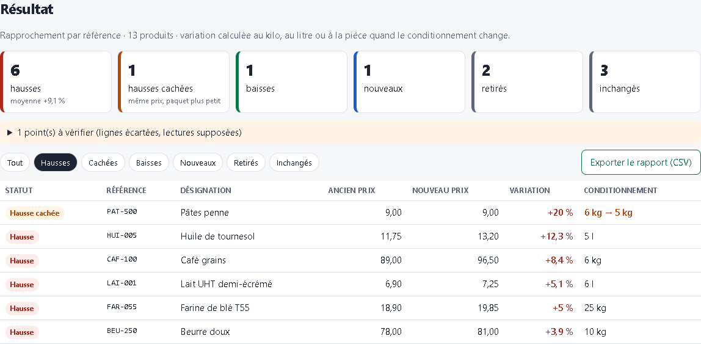

Le nouveau tarif fournisseur est arrivé. Qu'est-ce qui a augmenté ?
Déposez l'ancienne et la nouvelle liste de prix (Excel ou CSV, même si les colonnes ont changé). CostDiff vous montre en une minute chaque hausse, chaque baisse, les articles retirés et les hausses cachées : même prix, mais 10 paquets au lieu de 12.
Essayer avec vos fichiers ou avec des exemples fictifsGratuit pendant la version d'essai · aucun compte · 🔒 vos fichiers ne quittent pas votre ordinateur.

1. Deux fichiers, n'importe quel format
.xlsx ou .csv, séparateur virgule ou point-virgule, prix « 1.234,56 € » ou « 1,234.56 ». Les lignes de titre au-dessus du tableau sont ignorées et les colonnes reconnues en français, néerlandais, anglais et allemand. Vous pouvez corriger chaque colonne.
2. Comparaison au kilo, au litre, à la pièce
CostDiff lit le conditionnement (« 12 x 500 g », « 6 x 1 L », « carton de 24 ») et compare le prix unitaire. Une hausse déguisée en réduction de paquet ressort en orange.
3. Un rapport à garder
Filtrez les hausses, les nouveautés et les articles retirés, puis exportez le rapport en CSV pour Excel, pour mettre à jour vos prix de vente ou négocier.
Comparer plusieurs fournisseurs
Déposez les listes de 2 à 6 fournisseurs : les produits sont rapprochés par EAN (ou par référence) et le moins cher est surligné, au kilo ou au litre quand les conditionnements diffèrent (10 kg chez l'un, 25 kg chez l'autre).
Pourquoi pas Excel ou un assistant IA ?
| RECHERCHEV dans Excel | Assistant IA en ligne | CostDiff | |
|---|---|---|---|
| Colonnes différentes d'un mois à l'autre | à refaire à la main | oui | reconnues, modifiables |
| Hausse cachée par le conditionnement | formules à écrire | pas systématique | calculée pour chaque ligne |
| Chiffres reproductibles et vérifiables | oui | peut se tromper, difficile à vérifier ligne par ligne | oui : calcul déterministe, lignes écartées listées |
| Vos tarifs envoyés à un service tiers | non | oui | non : tout reste dans le navigateur |
| Temps de calcul | selon vos formules | variable | environ 0,1 à 0,2 s du clic au résultat pour deux listes de 5 000 lignes (95 à 184 ms selon les passages, mesurés dans Chrome sur le PC de développement) |
Pour qui ?
Commerces, épiceries fines, restaurants, boutiques en ligne, revendeurs et acheteurs qui reçoivent chaque mois ou chaque trimestre des listes de prix de leurs grossistes, et qui veulent savoir vite ce qui change pour ajuster leurs prix de vente.
Tarifs
Essai
Les deux outils, sans limite pendant la version d'essai. Pas de compte, pas de carte.
Ouvrir CostDiffPro (en préparation, pas encore disponible)
Prévu : mémorisation des colonnes de chaque fournisseur, historique des tarifs, alerte quand un nouveau tarif dépasse vos seuils, export Excel. Prix indicatif, susceptible de changer.
Ça m'intéresse : donner mon avisQuestions fréquentes
Mes fichiers sont-ils envoyés quelque part ?
Non. La page est chargée une fois, puis toute la lecture et le calcul se font dans votre navigateur. Vous pouvez le vérifier dans l'onglet « Réseau » des outils de développement de votre navigateur : aucun fichier n'y part.
Et les tarifs en PDF ?
Pas encore. Demandez à votre fournisseur la version Excel ou CSV (la plupart l'ont), ou exportez le PDF en Excel.
Que se passe-t-il pour une ligne illisible ?
Elle est écartée et listée (prix « sur demande », référence en double, ligne sans référence). CostDiff n'invente jamais un prix.